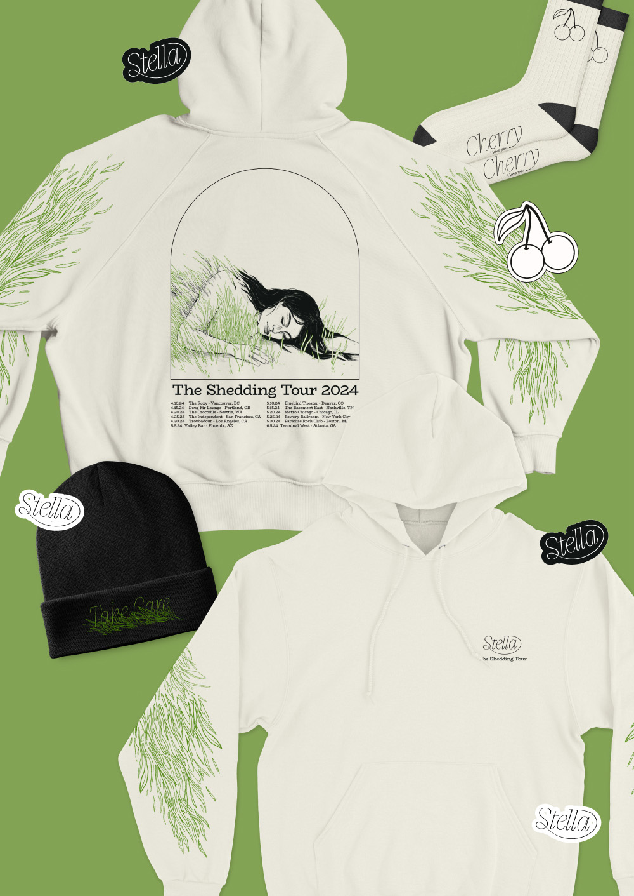

I am a designer who loves to apply my illustration skills in developing branding. This spring I will be graduating from the IDEA School of Design at Capilano University. What I love: getting lost in the magic of movie story telling (current all time fav Matilda), caring for my plant collection (currently 15 and counting) that is threatened to take over my room, and attending as many concerts as I can afford (current dream concert is seeing Harry Styles).
Thanks for stopping by, please take a moment to look at my work. If you like what you see or just want to talk about plants, movies or concerts let’s get in touch!
© 2020-2024. Hand crafted with ❤ by James Neufeld.